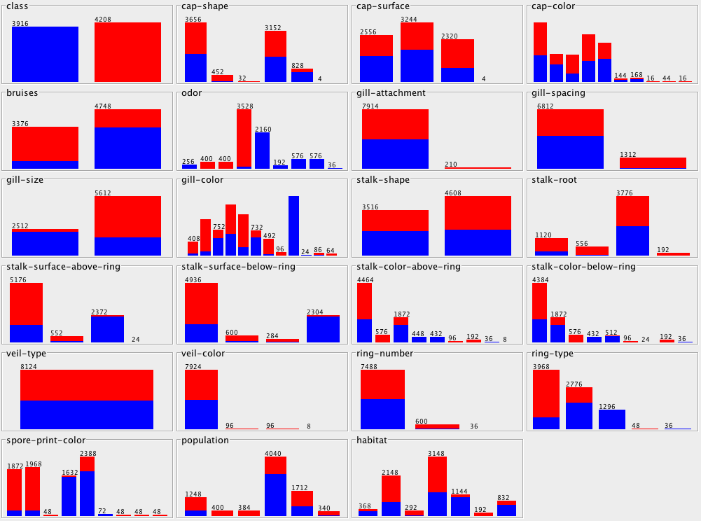

For the mushroom data set, we were tasked with mining for data that helped describe the mushrooms, looking specifically at statistics, classification techniques/models, anomalies, and association rules. Luckily, this data set was easily minable in the WEKA environment as it provides many of tools necessary to identify those cases listed above.
Looking at meaningful statistics, we can see that the traditional approaches aren’t going to yield useful results because of the nature of the data. The .csv file stored only categorical data, not nominal, therefore, traditional statistics looking at continuous or data would not prove effective. However, I used WEKA to generate some interesting visualizations of the data. Specifically what follows:

What we can see here is a comparison of poisonous vs. edible classification based on each of the attributes of the mushroom. Also of note is that for WEKA to properly read in a .csv file, it needs to have a little meta data, specifically attribute titles.
As for classification, I once again used WEKA to analyze the mushroom data. This yielded some great results that are available in the file called Decision Tree NBTree.txt. This is the result of the NBTree from the Classify tab in WEKA. I have included the basic summary below:
Correctly Classified Instances 8124 100 %
Incorrectly Classified Instances 0 0 %
Kappa statistic 1
Mean absolute error 0.0001
Root mean squared error 0.002
Relative absolute error 0.026 %
Root relative squared error 0.4095 %
Total Number of Instances 8124
What this is showing us is that everything was classified and that there was extremely low error. The file includes a print out of the tree structure, however, it’s rather cumbersome so I’ll leave it to you peruse as you please.
Next up we’ll take a look at some association analysis. Once again, I used WEKA because of it’s simplicity. The associations are summarized below. The whole document provides some other information, and while it’s not extremely relevant, I have included it as well. The summary is as follows:
Best rules found:
1. veil-color=w 7924 ==> veil-type=p 7924 conf:(1)
2. gill-attachment=f 7914 ==> veil-type=p 7914 conf:(1)
3. gill-attachment=f veil-color=w 7906 ==> veil-type=p 7906 conf:(1)
4. gill-attachment=f 7914 ==> veil-color=w 7906 conf:(1)
5. gill-attachment=f veil-type=p 7914 ==> veil-color=w 7906 conf:(1)
6. gill-attachment=f 7914 ==> veil-type=p veil-color=w 7906 conf:(1)
7. veil-color=w 7924 ==> gill-attachment=f 7906 conf:(1)
8. veil-type=p veil-color=w 7924 ==> gill-attachment=f 7906 conf:(1)
9. veil-color=w 7924 ==> gill-attachment=f veil-type=p 7906 conf:(1)
10. veil-type=p 8124 ==> veil-color=w 7924 conf:(0.98)
This data accurately reflects the classification analysis that we ran earlier and provides us with some attributes to split on for our decision tree.